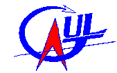
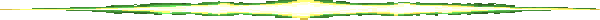

 |
|

| Depuis plus de trente ans, l'Association Nationale Sciences Techniques Jeunesse (ANSTJ) organise annuellement, en collaboration avec
le Centre National d'Études Spatiales (CNES), des campagnes de lancement de fusées expérimentales. Lors de
ces campagnes qui se déroulent en France, des groupes en provenance de divers pays (mais surtout de la France)
procèdent au lancement de leur fusée. L'ANSTJ et le CNES supervisent et fournissent les supports techniques
nécessaires au lancement, tels les systèmes de réception des données, les rampes de lancement, les
calculs des trajectoires, les systèmes de mise à feu, etc.
La complexité des projets supervisés varie d'une simple fusée propulsée avec récupération, à une fusée munie d'une gamme complexe d'instrumentation électronique. Ainsi une fusée peut cueillir maintes données en période de vol et les transmettre à un récepteur se trouvant au sol. La nature de ces données peut être connexe à des domaines scientifiques aussi variés que la physique, la biologie, la chimie, etc. |
Le GAUL en est à sa deuxième année d'existence. Nous sommes principalement composé d'étudiants (es) en génie mécanique, génie électrique et génie informatique de l'Université Laval. L'été dernier, lors notre séjour en France au Festival de l'espace, nous avons procédé au lancement de notre première fusée expérimentale Orion. Fort de cette expérience, nous désirons réaliser cette année une version très améliorée d'Orion qui sera lancée elle aussi en France. Celle-ci, prenant la relève à cette dernière, se dénomme Artémis. | En plus de vivre une expérience des plus excitantes, ce projet nous amène à appliquer dès aujourd'hui la
théorie que nous avons apprise tout au long de notre baccalauréat et de la mettre en pratique. Une telle expérience nous
enrichit autant sur le côté socio-culturel que sur le côté académique. En effet, le voyage en France nous permet
d'échanger nos connaissances, nos valeurs et nos idées avec les étudiants français et tous les autres participants
venant de divers pays.
De plus, nous désirons utiliser l'expérience acquise lors de ce séjour afin de pouvoir effectuer le lancement de fusées expérimentales ici, au Québec, dans un avenir assez rapproché. Cependant, cela exige une organisation importante et un support technique imposant (rampe de lancement, télémétrie, etc.). Présentement, l'Agence de Recherche et de Développement de l'Aérospatial Amateur (ARDAA) s'affaire à organiser un tel événement. Afin de favoriser l'émergence des activités spatiales au Québec et au Canada, nous allons concevoir une seconde fusée expérimentale, du nom de Capella, qui sera de basse altitude et lancée lors de cette campagne organisée au Québec. Pour des raisons de réglementation, il est présentement interdit au Canada de lancer des fusées dotées d'un moteur d'une puissance comparable à celle d'Artémis. En conséquence, nous travaillons présentement à la conception d'un moteur semblable à ceux utilisés en France, ainsi d'un émetteur, qui pourront, nous espérons, être mis à la disponibilité et utilisés par d'autres groupes lors de futures campagnes au Québec ou ailleurs au Canada. |